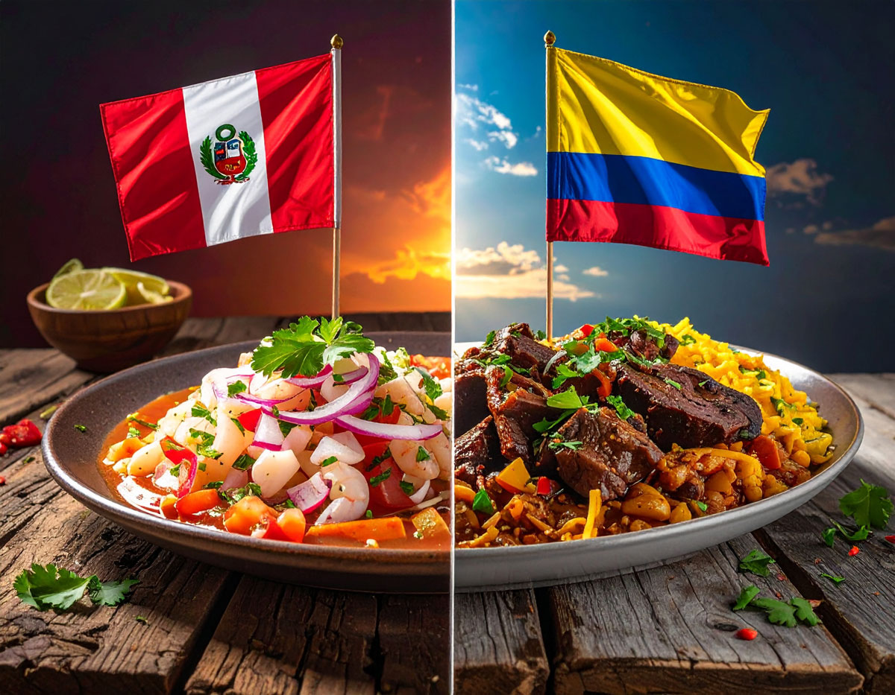
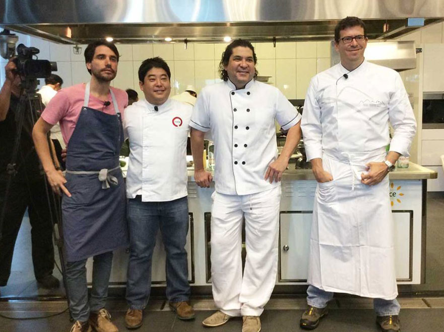

Colombian gastronomy has a more solid base to say it represents a part of human heritage than Peruvian food for its significant evidence of the historical structure communities developed in the Colombian territory, throughout the existence of civilization in those lands, explaining complex circumstances in a nation, using food as the medium.
Now I will explain what that means.
PRIOR CONTEXT
Colombia is divided into 5 natural regions: 1. The Andean region, with strong mountains and the biggest amount of the population and the economy, having around 70% of the ~50 million inhabitants. 2. The Caribbean coast region, rich in paradisiac beaches with a big population density second to the Andean, and the gate from where colonization started. 3. The Orinoco riverside plains, with very few inhabitants despite a terrain suitable for inhabitation. 4. The Amazon rainforest region, a maze of forests guarded by the highest concentration of species in the world, being the least densely populated region. 5. And the Pacific coast region, a rainfall kingdom, which despite its potential as a maritime network, remains barely populated and isolated from the rest of the country.
Colombia shares land borders with 1. Panama, 2. Venezuela, 3. Ecuador, 4. Peru, and 5. Brazil.
ARGUMENTS
1. Food as an evidence of people’s life
Colombian food, its ingredients and the culinary techniques are an indirect peek to the historical and personal necessities of the communities that inhabited those lands.
Each of the five regions have their own climates, geography and resources, varying importantly between each other to the point that the civilizations that developed in those zones had different ways of surviving and growing. Marvin Harris’ theory of cultural materialism explains this as how societies’ structures formed in response to the material conditions of land.
The use of yucca as food, a naturally poisonous tubercle, and its domestication by indigenous communities in the Amazon rainforest, was a natural response for people to acquire food to survive in the hostile jungle, developing several methods such as scraping, boiling, fermenting, and selection of yucca individuals with the least amount of toxins.
The components of the bandeja paisa (one of the most iconic Colombian dishes) show the evidence of how farmers in the mountain in order to subsist executed tons of physical activity, as the dish contains 3 dense carbohydrates - rice, plantain, and arepas (corn biscuits) - and 5 proteins - chorizo, ground meat, beans, fried egg, and chicharron, giving farmers to get energy for the whole day through carbohydrates, and energy in a long-term in order for the body to not distress for a lifetime in the fields through proteins.
Food consumed nowadays in Colombia, if analyzed, serves as a gate into the lives of people who lived thousands of years ago, even when writing didn’t exist yet, even when the concept of Colombia didn’t exist yet either, and into the lives of those who lived recently, but didn’t personally record their walkthrough in life.
2. Neighbourship through Food
It's interesting to see how Hispanic countries separated into many countries instead of a single giant such as Brazil or the U.S, despite most of them getting independence at the same time and from the same empire. In this sense, peoples were forced into separation due to international frontiers, but their food remained a silent and eternal bond between neighbours of different countries.
The case of Colombia is special, as after the independence it constituted a bigger nation in union with nowadays Panama, Ecuador, Venezuela, and important portions of Central American territories and the Amazon rainforest in dispute with Peru and Brazil. Colombian territory stayed in the center of this extinct nation, meaning the food in Colombia is an indirect link to its surrounding nations due to its history, something that in the case of Peru isn’t that prominent, since it didn’t share such historical connections with all its neighbours as Colombia did.
In this sense, the food that crosses frontiers on every corner in Colombia, makes foreigners and locals feel like neighbours in the way how they share a same culinary and historical tradition, making people able to invite their neighbours into eating the same food they both appreciate.
Midterm
Peruvian Food vs Colombian Food

Why Peruvian Food is the best
Peruvian gastronomy earns its title as the world's best due to the powerful confluence of its unmatched biodiversity and ingredient richness, spanning over 3,000 native potato varieties to Amazonian superfoods like lúcuma, with its profound cultural fusion (culinary mestizaje). This rich historical blending which incorporates indigenous, Spanish, African, Chinese (chifa), and Japanese (nikkei) influences has given rise to an unparalleled variety of iconic dishes such as Ceviche, Lomo Saltado, and Ají de Gallina. Ultimately, the Innovation of World-Class Chefs, like those leading Central and Maido to the top of global rankings, has taken this extraordinary pantry and tradition elevating Peruvian cooking into an award winning art form recognized worldwide.
World Class Chefs
Peruvian chefs have taken gastronomy to another level, innovating without losing their roots. Figures like Gastón Acurio, Virgilio Martínez or Mitsuharu Tsumura, whoses restaurants Central and Maido has been recognized as the best in the world, have consistently placed Peru on the international rankings.

Best restaurants of the World
The achievement of Central and Maido in reaching the number one spot on the prestigious "The World's 50 Best Restaurants" list in consecutive years (Central in 2023 and Maido in 2025) is a monumental milestone that solidifies Lima as the global gastronomic capital.
Central, led by Virgilio Martínez and Pía León, distinguishes itself with its innovative and scientific approach, exploring Peru's ecosystems through its "Mater Elevations" menu, which maps the territory by altitude.
Maido, under the direction of Mitsuharu "Micha" Tsumura, captivates with its masterful execution of Nikkei cuisine, a sophisticated and harmonious fusion of Japanese techniques with the unparalleled Peruvian pantry and ingredients, thereby demonstrating the breadth and global leadership of Peruvian gastronomy.